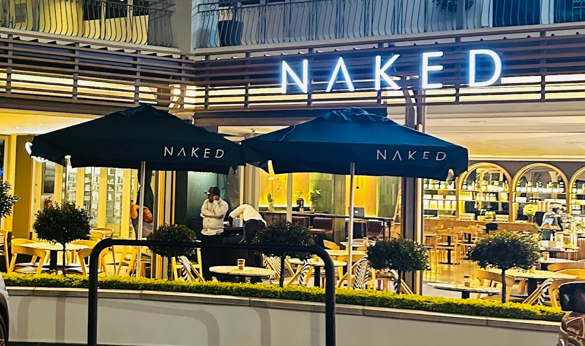
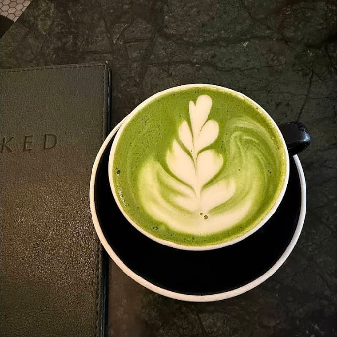
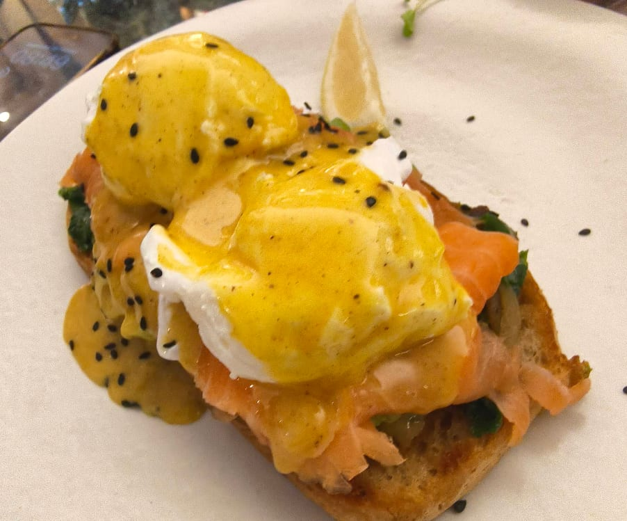
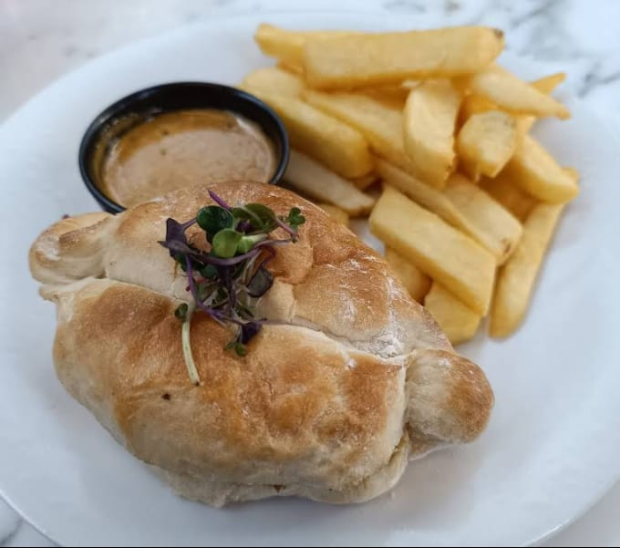

Naked Coffee Illovo is a haven for coffee lovers and food enthusiasts located in the bustling heart of Sandton. Our cozy spot at 204 Oxford Rd, Illovo, is designed to offer a warm and inviting atmosphere where guests can unwind and enjoy extraordinary, delicious food that caters to all dietary needs.
Our journey began with a passion for creating an exceptional dining experience that brings people together. At Naked Coffee Illovo, we believe in serving not just food, but an experience. Our chefs pour love and warmth into every dish, ensuring that each meal is not just a meal, but a cherished moment.
We are committed to providing a comfortable environment where everyone feels welcome. Our focus is on delivering quality food and drinks with a personal touch, ensuring that every visit leaves you with a smile and a desire to return.
At Naked Coffee Illovo, we offer a range of products designed to delight your taste buds and warm your heart.
Explore our diverse range of expertly crafted coffees, brewed to perfection to start your day on the right note.
Our menu features gourmet meals that cater to various dietary needs, ensuring everyone can enjoy a delicious dining experience.
Experience the warmth and love in every service interaction, making you feel right at home.
"Five stars for Naked Illovo! Jorge, Z, and the team are fantastic—so friendly and attentive. The coffee is great, the breakfast is excellent, and the music is always perfect. You have to try the omelettes and banana bread! ☕"— Brett Perlstein, ⭐⭐⭐⭐⭐
"A very nice little spot with great food and friendly attentive service. Plenty of heaters outside so even on a chilly winter's day it's still comfortable. Great place to spend some time with good company enjoying good food."— Joe D Ape, ⭐⭐⭐⭐
"I have been to the Sandton City branch a number of times. The service is okay nothing to go gaga about. I was expecting the same vibe but booooooy was I pleasantly surprised. The service was exceptional. I was so impressed. I left feeling like royalty."— kalipa “Bunny” klaas, ⭐⭐⭐⭐⭐




We'd love to hear from you — reach out to us anytime.